传输层
传输层就是连接寄件人和收件人的专属快递服务 —— 它不关心公路是否通畅、干线如何规划，只保证你的包裹（数据）准确、完整、及时地送到收件人手中，即端到端的通信
传输层基本原理
传输层的基本原理可浓缩为 “一个核心定位(连接网络层和应用层）、两大核心价值（逻辑通信，向上透明）、三类关键机制”
在 OSI 参考模型中，传输层的位置是关键 —— 夹在通信子网（物理层、数据链路层、网络层，负责 “硬件级通信”）和资源子网（会话层、表示层、应用层，负责 “软件级数据处理”）之间。
- 通信子网只管 “主机到主机” 的传输（比如把数据从你的电脑传到朋友的电脑）；
- 资源子网需要 “进程到进程” 的通信（比如你的微信进程和朋友的微信进程交互）；
传输层为源主机上的进程和目的主机上的进程之间提供可靠的透明数据传送，使高层用户在相互通信时不必关心通信子网实现的细节
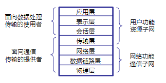
传输层 “逻辑通信” 和传输协议
传输层提供的 “逻辑通信”，本质是为源主机和目的主机的应用进程，搭建 “仿佛直接相连” 的虚拟通信通道
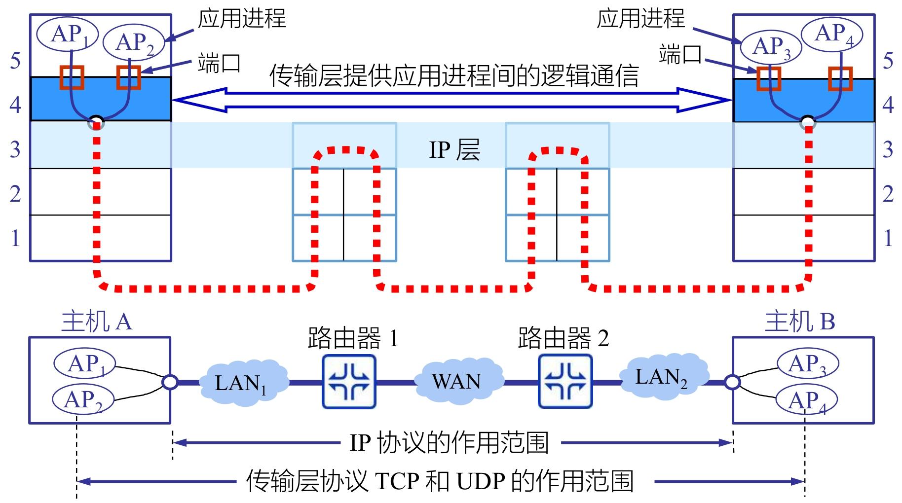
逻辑通信≠物理通信：
- IP 层（网络层）的 “物理通信”：负责 “主机到主机” 的路径传输，“主机 A→路由器 1→路由器 2→主机 B”
- 传输层的 “逻辑通信”：负责 “进程到进程” 的虚拟连接；“主机 A 的 AP1/AP2 进程 ↔ 主机 B 的 AP3/AP4 进程”
逻辑通信的核心实现：用 “端口号” 精准定位进程：
- 每个应用进程对应一个唯一的端口号
- 传输层把应用进程的数据，封装成 “IP 地址 + 端口号” 的报文段：IP 地址定位主机，端口号定位主机上的进程；
传输层的逻辑通信，核心是 “穿透” 底层物理网络，把 “主机到主机” 的粗粒度通信，升级为 “进程到进程” 的细粒度通信
而对于传输协议来说
传输协议是传输层实体（源主机与目的主机的传输层模块）之间遵循的通信规则集合，核心作用是实现 “端应用程序到端应用程序” 的进程级通信，即给上层应用提供 “进程间通信服务”
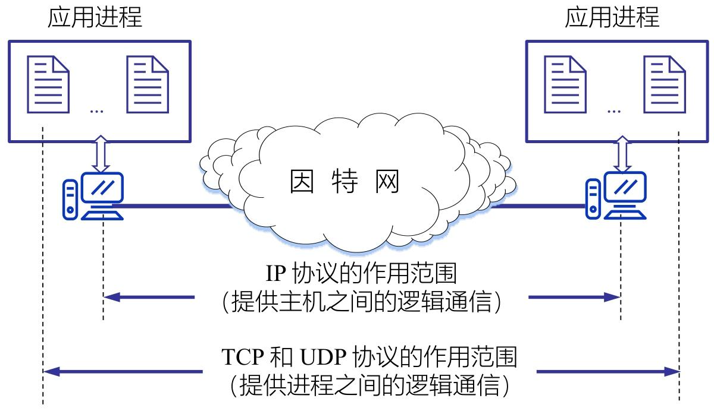
[!tip]
与网络层（IP 协议）的核心区别
对比维度 网络层协议（IP） 传输层协议（TCP/UDP） 通信范围 主机到主机 进程到进程 核心作用 主机寻址、路由转发（找设备） 进程寻址、可靠传输（找软件 + 保交付） 寻址方式 依赖 IP 地址（定位主机） 依赖 “IP 地址 + 端口号”（定位进程） 服务类型 无连接、不可靠（不保证数据完整） TCP：面向连接、可靠；UDP：无连接、不可靠 关注重点 底层路径传输（怎么把数据送过去） 上层进程通信（把数据送给谁、送得好不好）
传输层功能
传输层的核心功能围绕 “实现进程间可靠、精准通信” 展开
端到端的报文传递：直接面向应用进程提供 “端到端” 的数据交付服务
服务点的寻址：解决 “数据到主机后，该交给哪个应用进程” 的核心问题
拆分和组装：适配网络传输能力，解决应用层大数据块传输
- 拆分：源端传输层将应用层发送的大数据块，拆分成多个符合网络层、数据链路层传输限制的小报文段，并为每个报文段添加序号
- 组装：目的端传输层接收所有乱序到达的报文段后，根据序号重组为原始的大数据块
连接控制：管理传输连接的生命周期，包括连接建立、数据传输过程中的连接维护、数据传输完成后的连接终止；
为上层提供两种类型服务：面向连接和无连接
- 面向连接的传输服务：通信前必须先建立连接（如 TCP 的三次握手）
- 无连接的传输服务：通信前无需建立连接，应用进程直接发送数据（UDP)
为实现上面的功能，需要支撑精准通信的 “双地址”，即传输层地址
- NSAP 地址（网络服务访问点）：即网络层的 IP 地址，负责定位 “哪台主机”，是数据传输的 “大地址”
- TSAP 地址（传输访问服务点）：即端口号，负责定位 “主机上的哪个进程”，是数据传输的 “小地址”
同时传输层通过 “向上复用” 和 “向下复用”，让有限的网络资源支持更多应用场景
- 向上复用：多个应用进程共享同一传输层服务和网络连接（一个NSAP)
- 向下复用：一个应用进程可使用多个网络层路径（NSAP 地址）传输数据。(多个NSAP)
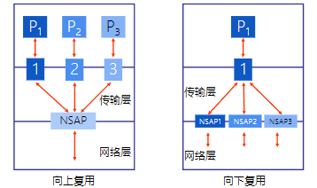
可靠传输
可靠传输是传输层的核心能力，核心目标是确保数据从源进程到目的进程的 “无差错、按序、无丢失、无重复” 交付，再配合端到端的流量控制，避免接收方因处理不及导致数据溢出
其中 “无差错、按序、无丢失、无重复” 则对应差错控制，次序控制，丢失控制，重复控制
差错控制
数据在网络传输中可能因链路干扰、路由器故障等出现比特翻转、数据损坏等错误，差错控制就是检测并处理这些错误。
通过校验和（如 TCP 的强制性校验和、UDP 的可选校验和）检测数据完整性
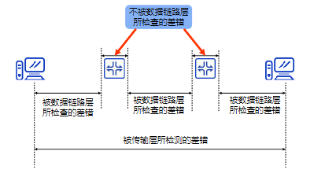
次序控制：保证数据按序交付
应用层大数据会被拆分为多个报文段传输，这些报文段可能因路由不同、传输延迟差异导致乱序到达，次序控制负责恢复原始顺序。
分段与组合：源端传输层将大数据拆分为小报文段，为每个报文段分配唯一序号；目的端传输层根据序号，将乱序报文段重组为原始数据
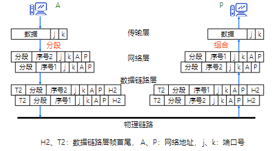
连接与分割：对于连续的数据流，传输层通过 “连接” 标识（网络地址（A、P）和端口号（j、k））关联相关数据，再按序号 “分割” 为独立报文段传输，确保接收方准确拼接。
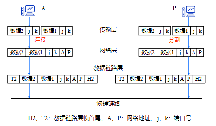
丢失控制：找回丢失数据
报文段可能因网络拥堵、链路中断等丢失，丢失控制通过 “重传机制” 确保所有数据都能到达目的地。
主要是超时重传机制：每个报文段设置计时器，若超时未收到接收方的确认，判定报文段丢失，自动重传该报文段；
但是同时需要序号和确认机制，确保重传的报文段能被接收方正确识别，避免重复处理。
传输层流量控制
传输层流量控制的核心是在源进程与目的进程之间动态协调传输速率，避免发送方发送过快导致接收方缓冲区溢出
[!note]
- 数据链路层流量控制：作用于单条链路（如主机 A→路由器 1、路由器 1→路由器 2），仅协调相邻两个设备的传输速率；
- 传输层流量控制：作用于端到端（如主机 A 的 AP1 进程→主机 B 的 AP4 进程），协调整个传输路径的源端与目的端速率，覆盖所有中间链路。
传输层同样用滑动窗口协议实现流量控制，但窗口大小可动态变化，
核心适配接收方缓冲区的实时空闲情况 —— 接收方缓冲区空闲多，窗口就放大（允许发送方多传）；空闲少，窗口就缩小（限制发送方少传）。
通过 3 个指针将发送方缓冲区划分为 4 个区域：发送已确认，发送未确认，可发送，不可发送
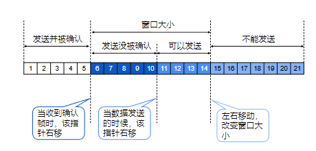
- 当发送方发送数据时，“可发送指针” 向右移，缩小 “可以发送” 区域；
- 当发送方收到接收方的确认帧时，“已发送并确认指针” 向右移，释放已确认数据的缓冲区；
- 当接收方缓冲区空闲情况变化时，窗口边界左右移动（扩大或缩小窗口大小），动态调整 “可以发送” 区域的范围。
传输连接
传输连接是传输层实现端到端数据传送的核心机制，核心分为 “面向连接” 和 “无连接” 两种模式，其中面向连接需经历 “建立 - 传输 - 终止” 完整流程
面向连接传输的核心是 “先建连接、再传数据、最后断连接”
三次握手（避免无效请求）
让通信双方（A 和 B）确认彼此的发送和接收能力，同时拒绝重复的连接请求，步骤如下：
- 第一步（请求）：主机 A 发送连接请求报文
CR(seq=x)，表示 “我想和你建立连接，我的初始序号是 x”； - 第二步（响应 + 请求）：主机 B 收到后，回复
CR(seq=y,ack=x+1)，表示 “我收到你的请求（ack=x+1 证明已接收 x 序号数据），同意连接，我的初始序号是 y”； - 第三步（确认）：主机 A 收到后，再回复
CR(seq=x+1,ack=y+1)，表示 “我收到你的响应（ack=y+1 证明已接收 y 序号数据），连接可以正式建立”。
如果主机 A 的连接请求报文CR(seq=x)因网络延迟重复发送，主机 B 收到重复请求时，会回复RJ(ack=y+1)（拒绝报文）
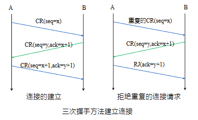
数据传输：可靠交付
连接建立后，双方进入数据传输阶段：
- 传输层会为每个数据字节分配序号，确保接收方按序重组数据；
- 配合确认机制、重传机制（丢失数据重传）、流量控制（避免缓冲区溢出），保证数据可靠交付；
- 双方可同时发送数据（全双工通信），传输过程中连接持续维护。
连接终止：有序关闭（避免数据丢失）
- 第一步：一方（如 A）发送 “连接终止请求”，告知对方 “我已无数据要发送”；
- 第二步：另一方（如 B）回复 “连接终止确认”，表示 “我收到你的断连请求，正在处理剩余数据”；
- 第三步：B 处理完所有数据后，发送 “对确认帧的响应”，A 收到后正式关闭连接，确保数据无残留。
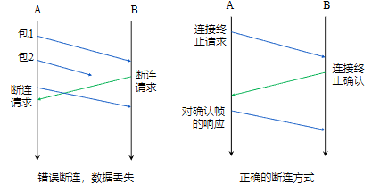
断连过程中会用到三个关键报文：
DR（断连请求）：主动发起断连的一方发送，表明要关闭连接；DC（断连证实）：接收断连请求的一方回复，确认收到断连通知；ACK（确认）：对断连证实的再次确认，确保双方都同意关闭连接；
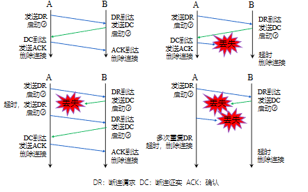
用户数据报协议（UDP）
UDP 是传输层无连接、轻量级的核心协议，核心定位是 “高效交付、按需使用”，不追求可靠性但能满足低时延、灵活通信需求
- UDP 的核心是非连接式事务处理：应用层发起数据传输时，UDP 无需先建立连接，直接封装数据后通过 IP 协议转发，传输完成后也无需终止连接，全程无额外交互开销。
- 所以UDP不提供端到端的确认、重传机制，数据可能出现丢失、重复、延迟、乱序或损坏，可靠性需由上层应用自行保障
底层依赖 IP 协议：UDP 不能独立运行，必须以 IP 协议为基础将 UDP 数据报封装在 IP 数据报中传输
IP 协议负责主机寻址和路由转发，UDP 负责进程寻址和数据封装。
UDP 六大核心特征
- 端到端服务：直接面向应用进程，数据从源进程封装后直达目的进程，不依赖中间节点（路由器）的额外处理。
- 无连接：无需建连、断连流程，应用进程可随时发送数据，响应速度快。
- 面向报文：不拆分应用层数据，直接将完整报文封装为 UDP 数据报（若数据过大，由 IP 层分片），接收方也会原样交付应用层，不重组、不合并。
- 尽力而为：仅尝试将数据发送到目的地，不处理传输中的错误，也不控制流量，尽最大努力完成交付。
- 任意交互：支持一对一（如点对点聊天）、一对多（如直播、广播）两种通信方式，适配多场景数据分发需求。
- 操作系统无关：跨平台兼容性强，无论何种操作系统，UDP 的协议逻辑和接口都保持一致，便于应用开发。
其中任意交互中，UDP允许采用2种交互通信方式：一对一，一对多
- 一对一：单个源进程与单个目的进程通信（如 DNS 查询，客户端向指定 DNS 服务器发送请求）。
- 一对多：单个源进程向多个目的进程同时发送数据（如视频直播，主播端向所有观众端推送流数据）。
同时为了端到端的服务，UDP 通过 “协议端口号” 定位主机上的应用进程，解决 “数据到主机后交给哪个进程” 的问题。
UDP报头格式
UDP 报头是 UDP 协议的核心封装结构，仅占 8 字节（64 位），无冗余字段
UDP 报头按 32 位（4 字节）为一个单元排列：源端口号和目的端口号作为一个单元各占两个字节，而报文长度和校验和一起
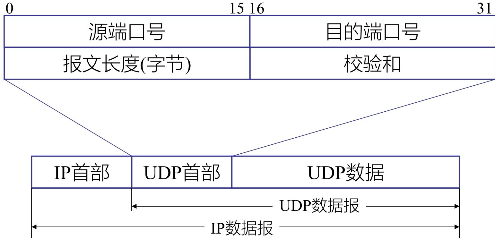
UDP数据报封装在IP数据报中，将IP首部去除就是UDP数据报
- 源端口号（Source Port）
- 作为接收进程返回数据时的 “目的端口”，即告知接收方 “回复数据时该发往哪个端口（对应源主机的应用进程）”。
- 可选字段，若无需接收方回复（如广播、单向数据推送），则该字段值填 0
- 目的端口号（Destination Port）
- 定位接收主机上的 “特定应用进程”，是 UDP 实现 “进程寻址” 的核心字段，与源主机的 IP 地址配合，精准交付数据。
- 报文长度（Length）
- 标识整个 UDP 数据报的总字节数，包括 “UDP 首部（8 字节）+ UDP 数据（应用层数据）”。
- UDP 数据报长度 = IP 数据报总长度 - IP 首部长度（因为 UDP 数据报封装在 IP 数据报中）。
- 校验和（Checksum）
- 检测传输过程中数据是否出错（如比特翻转、数据丢失、乱序），是 UDP 唯一的错误检测机制。
12 字节伪首部（仅用于校验和计算）
伪首部并非 UDP 报头的实际传输部分，仅在计算校验和时临时添加，目的是让 UDP “双重校验”—— 既确保进程寻址正确，又确保主机和协议正确。
伪首部结构（12 字节，按 32 位分组）
| 32 位（4 字节） | 32 位（4 字节） | 32 位（4 字节） |
|---|---|---|
| 源 IP 地址 | 目的 IP 地址 | 0（填充） + 协议号（17） + UDP 长度 |
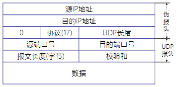
具体校验和计算过程：将 “伪首部（12 字节）+ UDP 首部（8 字节）+ UDP 数据（N 字节）” 按 16 位（2 字节）分组，不足 16 位的末尾补 0（填充）；
反码求和：对所有 16 位分组按 “二进制反码” 规则求和（若有进位，将进位加到和的最低位）；
取反码：对求和结果再次取 “二进制反码”，得到最终的校验和；填入校验和字段
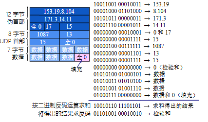
传输控制协议（TCP）
TCP 是传输层面向连接、可靠传输的核心协议，基于 IP 网络层提供增强服务，核心围绕 “可靠字节流传输” 展开
TCP提供端到端的流量控制，并计算和验证一个强制性的端到端检查和
TCP 核心服务特点
TCP 的服务设计完全围绕 “可靠性” 和 “实用性”
- 面向连接：通信前必须通过三次握手建立连接，通信后通过四次挥手终止连接，全程有明确的连接生命周期管理；
- 点对点：仅支持两个进程间的一对一通信，不支持广播、组播模式；
- 完全的可靠性：通过序号、确认、重传、校验和等机制，确保数据无丢失、无重复、按序交付；
- 全双工通信：连接建立后，通信双方可同时发送和接收数据，无需单向交替；
- 流接口：将应用层数据视为连续的字节流，而非离散报文，传输层负责拆分和重组，应用层无需关注数据分段；
- 可靠的连接建立：通过三次握手避免无效连接请求，确保双方发送和接收能力正常；
- 友好的连接关闭：通过四次挥手保证双方数据都已发送完毕，避免关闭连接时丢失数据。
TCP的报头格式
TCP 固定首部占 20 字节，是 TCP 协议实现连接管理、可靠传输、流量控制的核心载体，按位（0~31 位）排列
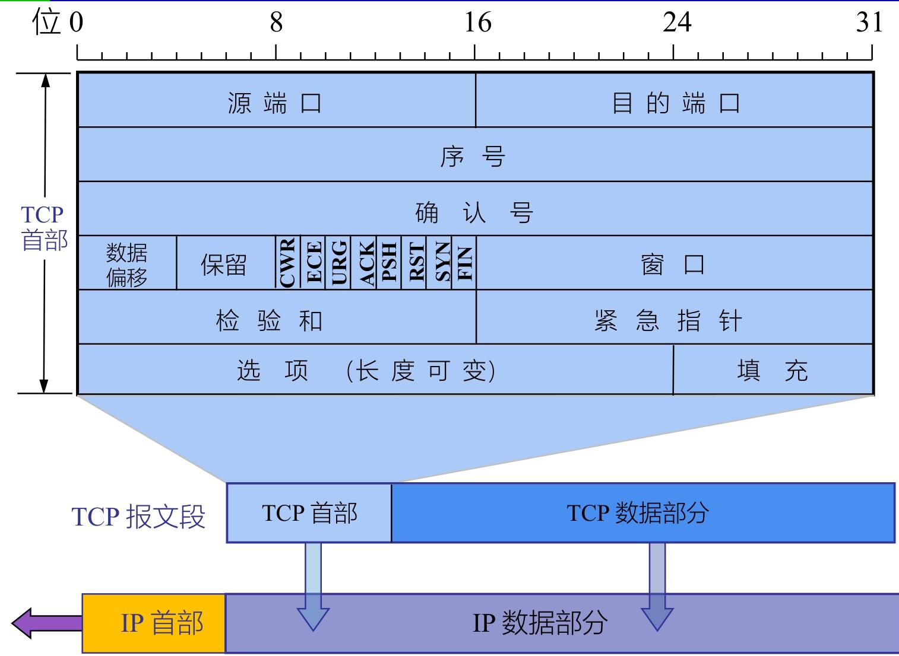
端口号（源 / 目的，各 2 字节）
- TCP 实现 “进程级寻址” 的关键，与 IP 地址配合形成 “IP + 端口” 的唯一标识（如 192.168.1.1:8080）。
序号（4 字节）
- 给字节流中的每个字节分配唯一序号，解决数据乱序问题。
- 本报文段的序号 = 该报文段第一个数据字节在整个字节流中的位置。
确认号（4 字节）
- 响应对方的序号，告知 “我已收到你截至 X-1 字节的数据，下次请发 X 字节”。
- 仅当标志位 ACK=1 时有效（TCP 连接建立后，ACK 始终为 1）
数据偏移（4 位）
- 区分 TCP 首部和数据部分的边界（因为首部可能包含可变长度的选项）
- 数据偏移值 × 4 字节 = 首部总长度
标志位（8 个，重点解析 6 个核心）
| 标志位 | 位置 | 核心作用 | | ------- | --------- | ------------------------------------------------------------ | | SYN | 第 5 位 | 同步连接，SYN=1 表示 “连接请求” 或 “连接接受” 报文（三次握手核心标志） | | FIN | 第 0 位 | 终止连接，FIN=1 表示 “发送方数据已发完，请求关闭连接”（四次挥手核心标志） | | ACK | 第 4 位 | 确认有效，ACK=1 时确认号字段生效（连接建立后始终为 1） | | URG | 第 7 位 | 紧急数据标识，URG=1 时紧急指针字段有效（如键盘中断信号需优先传输） | | PSH | 第 3 位 | 推送数据，PSH=1 时接收方需立即将数据交付应用进程（不等待缓冲区填满） | | RST | 第 2 位 | 复位连接，RST=1 表示连接出现严重错误（如主机崩溃），需释放连接后重新建立 | | ECE/CWR | 第 1/6 位 | 拥塞控制相关，ECE=1 表示网络拥堵，CWR=1 表示发送方已减小发送窗口 |
窗口（2 字节）
- TCP 流量控制的核心，告知对方 “我当前的接收缓冲区还能容纳多少字节的数据”。
检验和（2 字节）
- 检测传输过程中的数据错误（如比特翻转、数据丢失），是 TCP 可靠传输的基础。
- 校验范围：TCP 首部 + TCP 数据 + 12 字节伪首部
紧急指针（2 字节）
- 配合 URG 标志，标识本报文段中紧急数据的长度（紧急数据放在数据部分最前面）。
选项：长度可变。
- TCP最初只规定了一种选项，即最大报文段长度 MSS。
- MSS 告诉对方TCP：“我的缓存所能接收的报文段的数据字段的最大长度是MSS个字节”
填充（可变长度）
- 确保 TCP 首部总长度为 32 位（4 字节）的整数倍（因为 TCP 按 32 位字处理首部）。
TCP 核心特性
TCP 的核心特性围绕 “可靠字节流传输” 展开，结合序号确认、滑动窗口、超时重传等机制保障可靠性，同时通过 SACK、Nagle 算法等优化传输性能
字节计数与确认机制
- 所有传输的字节都有唯一序号，确认序号始终是 “上次成功接收的最大字节序号 + 1”，明确告知对方 “下次应发送的字节位置”。
- 同时只有ACK标志为1时，确认序号字段才有效
- 发送ACK无需任何代价，因为32bit的确认序号字段和ACK标志一样，总是TCP首部的一部分。
面向流的传输模型
- 应用层数据被视为连续字节流，TCP 负责拆分（发送端）和重组（接收端），应用进程无需关注数据分段细节。
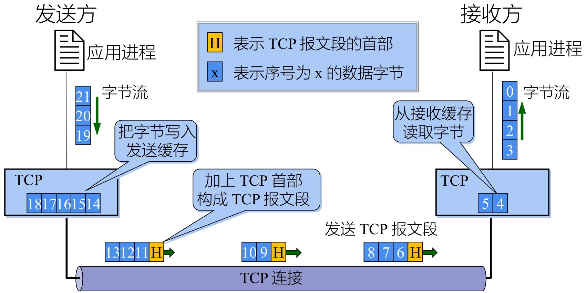
无选择确认的滑动窗口特性
- TCP 是 “无选择确认 / 否认” 的滑动窗口协议，仅能确认 “截至某序号的所有字节已接收”，无法单独确认数据流中的部分片段。类似于数据链路层的回退N协议，其中的确认信号ACKn只能确定
n之前的帧
- TCP 是 “无选择确认 / 否认” 的滑动窗口协议，仅能确认 “截至某序号的所有字节已接收”，无法单独确认数据流中的部分片段。类似于数据链路层的回退N协议，其中的确认信号ACKn只能确定
可靠传输核心技术
- 排序技术：发送端为每个报文段附加序号，接收端按序号重组，解决乱序和重复问题。
- 重传技术：采用 “带重传的正向确认”，发送方未收到确认则重传报文段。
- 流量控制技术：通过滑动窗口限制发送速率，防止接收方缓冲区溢出。
超时重传：可靠传输的关键保障
TCP 为每个发送的报文段设置计时器，超时未收到确认则自动重传
核心挑战是 “往返时延（RTT）波动大”（互联网路由动态变化导致），需精准计算超时重传时间（RTO）。
首先TCP保留加权平均往返时间（RTT_S）：平滑 RTT 波动
- 公式为
新RTT_S = (1-α)×旧RTT_S + α×新RTT样本，α 推荐值 0.125（更新较慢，适配波动）。 - 首次测量时，RTT_S 直接取 RTT 样本值。
往返时间偏差（RTT_D）：衡量 RTT 波动幅度
- 公式为
新RTT_D = (1-β)×旧RTT_D + β×|RTT_S - 新RTT样本|，β 推荐值 0.25。 - 首次测量时，RTT_D 取 RTT 样本值的一半。
RTT_D 是 RTT 的偏差的加权平均值:
最后根据RTT_D以及RTT_S计算超时重传时间（RTO）
RTO = RTT_S + 4 × RTT_D，确保 RTO 略大于实际 RTT，减少误重传。
在上述方案下，存在问题：重传的报文段收到 ACK 后，无法区分 ACK 对应原始报文还是重传报文，导致 RTT 测量歧义。
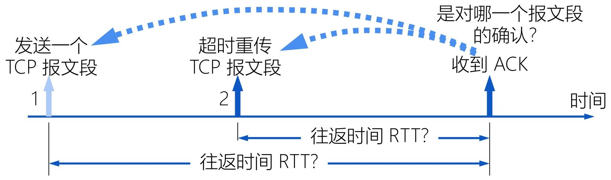
利用Karn 算法及修正：重传的报文段不参与 RTT 样本计算。
报文段每重传一次，RTO 翻倍（新RTO = γ×旧RTO，γ 典型值 2），避免因 RTT 测量缺失导致 RTO 无法更新。
[!tip]
TCP 通过 4 种计时器保障传输有序：
- 重传计时器：超时未确认则重传报文段（核心计时器）。
- 持久计时器：防止 “通告窗口为 0 后，接收方窗口恢复但通知丢失” 导致的死锁。
- 保活计时器：长连接场景（如 SSH），无数据传输时发送探测报文，确认连接是否存活。
- 关闭状态计时器：连接终止阶段（TIME_WAIT），等待 2MSL 确保报文失效。
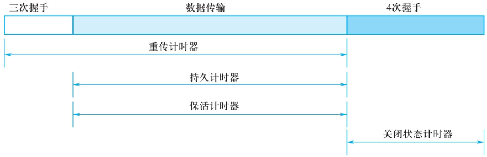
选择确认（SACK）：解决无选择确认的缺陷
无选择确认机制下，中间字节丢失会导致后续已接收字节无法被确认（需等待丢失字节重传），SACK 通过 “选择性确认已接收的不连续字节块” 解决该问题。
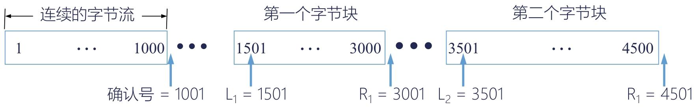
- 接收方通过 SACK 选项，告知发送方 “已接收的不连续字节块范围”，发送方仅需重传丢失的字节块，无需重传已接收的后续字节。
- 已接收 1~1000、1501~3000、3501~4500 字节，确认号 = 1001（未接收 1001~1500 字节），同时通过 SACK 选项告知 “1501~3000、3501~4500 字节已接收”，发送方仅需重传 1001~1500 字节。
注意：RFC 2018 关键规定
- 建立连接时，需在 TCP 首部选项中声明 “允许 SACK”，且双方需协商一致。
- SACK 选项占 2 字节（1 字节标识选项类型，1 字节标识选项长度），每个字节块边界需 4 字节描述，最多支持 4 个不连续字节块（受 TCP 首部选项最大 40 字节限制）。
- 原有确认号字段用法不变，SACK 仅作为补充信息。
TCP 数据发送时机：平衡效率与开销
TCP 通过 3 种机制控制报文段发送时机，避免频繁发送小报文导致网络开销过大：
- 达到最大报文段长度（MSS）：缓存数据达到 MSS 时，立即封装发送。
- 应用进程推送（push 操作）：应用进程明确要求发送时，TCP 立即封装缓存数据发送（无论是否达到 MSS）。
- 计时器超时：达到超时时间后，封装当前缓存数据发送（长度不超过 MSS）。
其中有提升性能的措施：
Nagle 算法：减少小报文数量
- 发送方先发送第一个字节，缓存后续字节；收到第一个字节的确认后，再将缓存数据封装为一个报文段发送。
- 缓存数据达到 “发送窗口大小的一半” 或 “MSS” 时，立即发送，无需等待确认。
糊涂窗口综合症（HWS）
TCP接收缓存已满，而应用进程一次只从缓存中读取一个字节
- 接收方：等待缓存可容纳 1 个 MSS 或空闲空间达一半时，再更新通告窗口，避免通告过小窗口。
- 发送方：避免发送小于 MSS 的小报文，等待缓存数据积累到一定规模后再发送。
TCP 连接建立（三次握手）
TCP 连接建立的核心是 “三次握手”，本质是通过三次交互确认双方通信能力、协商参数并分配资源，同时避免失效请求干扰
在发送数据前，三次握手需解决 3 个关键问题：
- 双向确认存在：让客户端和服务器都明确 “对方已就绪”，能正常发送和接收数据；
- 协商核心参数：确定最大报文段长度（MSS）、最大窗口大小、服务质量等，为后续传输适配；
- 分配传输资源：双方预留缓存空间、在连接表中创建条目，保障数据传输顺畅。
假设主机 A 是客户端（主动发起连接），主机 B 是服务器（被动等待连接）
| 步骤 | 交互行为 | 双方状态变化 | 报文核心内容 |
|---|---|---|---|
| 1（第一次握手） | 客户端主动打开连接 | 客户端：CLOSED → SYN-SENT | 发送SYN=1，seq=x（SYN=1 表示连接请求，x 是客户端初始序号） |
| 2（第二次握手） | 服务器被动打开并响应 | 服务器：CLOSED → LISTEN → SYN-RCVD | 回复SYN=1，ACK=1，seq=y，ack=x+1（SYN=1 表示同意连接，ACK=1 确认收到客户端请求，y 是服务器初始序号，ack=x+1 表示 “已接收 x 及之前的所有数据”） |
| 3（第三次握手） | 客户端确认服务器响应 | 客户端：SYN-SENT → ESTABLISHED；服务器：SYN-RCVD → ESTABLISHED | 发送ACK=1，seq=x+1，ack=y+1（ACK=1 确认收到服务器响应，ack=y+1 表示 “已接收 y 及之前的所有数据”） |
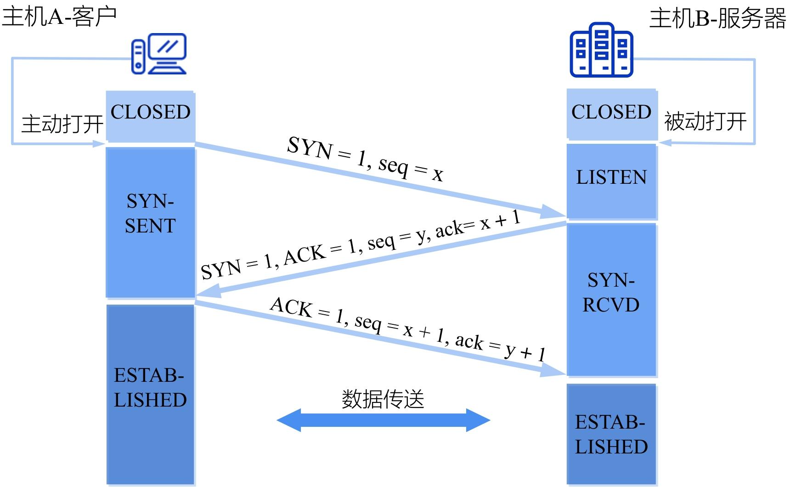
[!note]
三次握手的主要目的是为了避免 “已失效的连接请求报文” 干扰新连接，即重复连接
TCP连接的释放
- 连接建立是 “三次握手”，连接释放是 “四次挥手”（因全双工通信需双方分别确认数据发送完毕）；
- 连接释放时，主动关闭方需等待 2MSL（最长报文寿命），确保最后一个确认报文到达对方，同时让网络中残留的旧报文段自然失效，避免干扰后续新连接
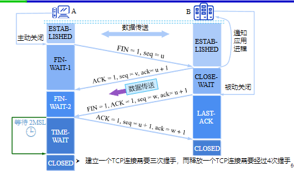
TCP 拥塞控制原理
TCP 拥塞控制的核心是避免过多报文段注入网络导致路由器 / 链路过载，同时最大化利用网络空闲资源，遵循 “报文段守恒” 原则（网络中可用容量决定有效传输量）
- 拥塞窗口（cwnd）：TCP 发送方允许连续发送的最大数据量（单位：SMSS 字节，即发送端最大数据段尺寸），是拥塞控制的核心调节变量。
- 接收端窗口（rwnd）：接收方告知的缓冲区空闲大小，限制发送方不超过接收能力。
- 慢启动阈值（ssthresh）：区分 “慢启动” 和 “拥塞避免” 阶段的临界值，初始值通常为较大值（如 65535 字节）。
- 发送窗口上限：取
min(rwnd, cwnd)，由接收方能力（rwnd）和网络拥塞状态（cwnd）共同决定。
两种拥塞控制方式
- 端到端拥塞控制：发送方通过报文丢失、重复确认等现象自主判断拥塞，调整发送速率，无需网络设备配合，是 TCP 默认方式。
- 网络辅助拥塞控制：路由器主动反馈拥塞信息（如 IP 头部 ECN 标志），需底层硬件支持，适配性较弱。
TCP 拥塞控制遵循 “AIMD（加法增大，乘法减小）” 法则，由慢启动、拥塞避免、快速重传、快速恢复 4 种算法协同工作
[!note]
乘法减小（Multiplicative Decrease）
- 触发条件：网络拥塞（报文超时）或局部丢包（3 个重复确认）。
- 操作：ssthresh = 当前 cwnd/2，快速降低发送速率，避免拥塞加剧。
加法增大（Additive Increase）
- 触发条件：拥塞避免阶段，无报文丢失（收到正常确认）。
- 操作：每个传输轮次 cwnd+1 个 SMSS，缓慢增长避免过早拥塞。
慢启动：快速探测网络容量（cwnd 指数增长）
- 连接初始阶段，发送方不知道网络容量，通过指数增长快速探测上限。
- 操作规则：
- 初始 cwnd=1 个 SMSS 字节；
- 每个传输轮次（收到所有报文确认）后，cwnd 翻倍（1→2→4→8...）；
- 当 cwnd≥ssthresh 时，进入拥塞避免阶段。
拥塞避免：平稳利用网络资源（cwnd 线性增长）
- 避免 cwnd 增长过快导致拥塞，通过线性增长逐步逼近网络容量。
- 操作规则：
- 每个传输轮次后，cwnd 增加 1 个 SMSS 字节（而非翻倍）；
- 若检测到报文超时（判定网络拥塞），执行 “乘法减小”：ssthresh = 当前 cwnd/2，cwnd 重置为 1，重新进入慢启动。
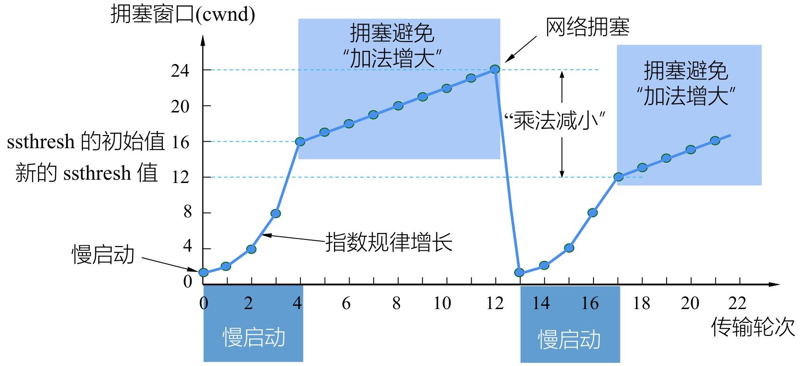
[!tip]
假定最大报文段长度是1KB，TCP拥塞窗口是16KB，并发生了超时事件。
- 问题1：如果接着4个轮次传输都是成功的，那么该窗口将是多大？
- 发生超时后，ssthresh = 当前 cwnd/2，同时cwnd 重置为 1即下一次传输的是1，接着是2、4、8个报文段。在八个报文段后到达慢启动阈值（ssthresh）进入拥塞避免节点，采用加法增大，所以4个轮次后的拥塞窗口是9KB。
- 问题2：如果接着6个轮次都成功，CWND的值应该是多大？
- 由于每个报文段长度为1KB，所以6个轮次后的拥塞窗口大小为11KB。
快速重传 / 快速恢复
快速重传和快速恢复是 TCP 拥塞控制的核心补充算法，核心目标是在不等待超时的情况下，快速识别并修复单个报文段丢失，避免因超时导致传输效率骤降
快速重传：不等超时，及时重传丢失报文
- 当网络仅发生 “局部丢包”（而非严重拥塞）时，通过接收方的重复确认，让发送方快速定位丢失的报文段，无需等待重传计时器超时，提前发起重传
- 接收方行为：收到失序报文段后，立即发送重复确认（不等待自己的数据）。
- 发送方行为：连续收到 3 个相同的重复确认，判定对应报文段丢失，立即重传。
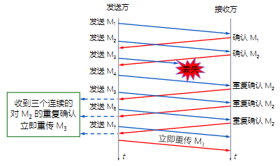
快速恢复：避免拥塞后性能骤降
发送方收到 3 个重复确认后，判定网络 “无严重拥塞”（仅局部丢包），因此不执行慢启动（避免 cwnd 重置为 1 导致性能暴跌），直接进入拥塞避免阶段
- 执行 “乘法减小”：将慢启动阈值（ssthresh）设为当前拥塞窗口（cwnd）的一半（与拥塞避免阶段的拥塞处理逻辑一致）；
- 重置拥塞窗口：cwnd 直接设为新的 ssthresh（而非 1），跳过慢启动阶段；
- 进入拥塞避免：之后每个传输轮次，cwnd 按 “加法增大” 规则线性增长（每收到一个确认，cwnd 增加 1 个 SMSS 字节），逐步恢复传输速率
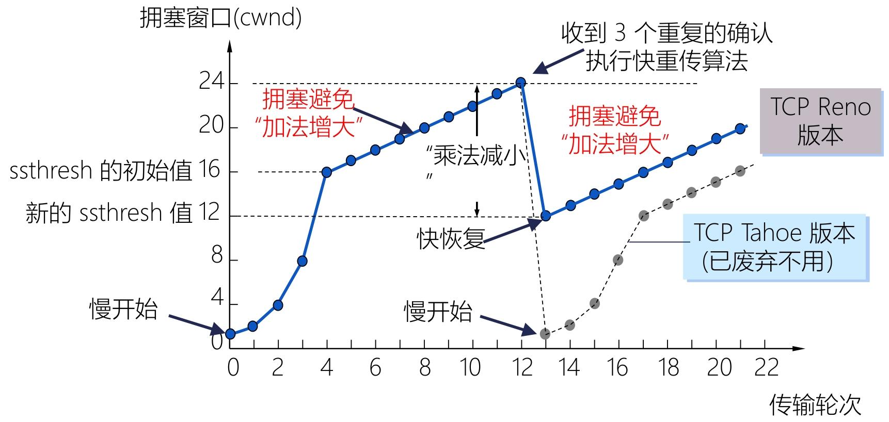
快速重传 / 恢复过程中，发送窗口的最大值仍遵循min(rwnd, cwnd)规则：
- 若 rwnd < cwnd：由接收方缓冲区大小限制发送速率；
- 若 cwnd < rwnd：由网络拥塞状态（cwnd）限制发送速率，确保不加剧网络负担。